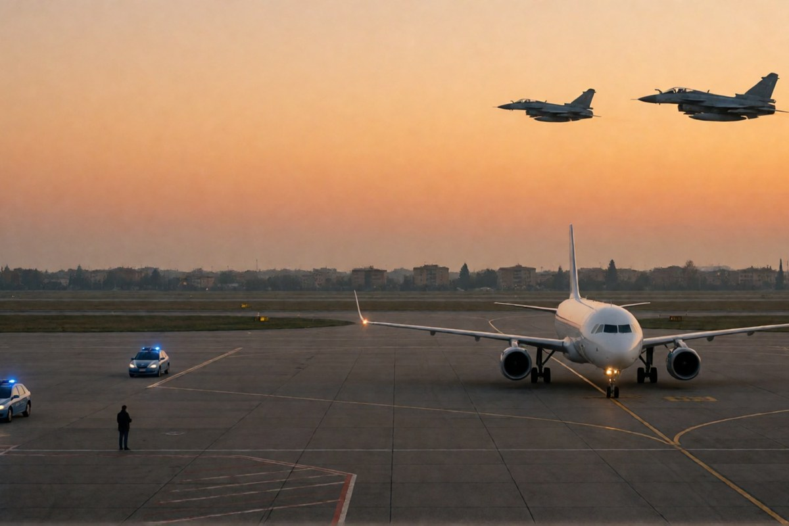

Cronaca · 6 novembre 2026
Allarmi bomba sui voli europei, l'Italia è il Paese più colpito

Email in italiano firmate da sedicenti «Combattenti dello Stato Maschile» hanno fatto dirottare o isolare decine di aerei in tre giorni. Nessun esplosivo trovato. Indagano la Procura nazionale antimafia e antiterrorismo.
di Franco Zanghì
Una email scritta in italiano, una firma che richiama un movimento russo, decine di aerei costretti a cambiare rotta o a restare isolati in pista. Gli allarmi bomba che da martedì si rincorrono nei cieli europei non hanno prodotto un solo ordigno, né un ferito. Hanno prodotto caccia in volo, piste bloccate e migliaia di passeggeri fermi.
Che cosa è successo
Il 5 novembre un volo Finnair da Helsinki è arrivato a Fiumicino scortato dai caccia dell'Aeronautica militare ed è stato isolato in pista per i controlli degli artificieri. Un Aer Lingus partito da Dublino per Roma è stato fatto atterrare a Evreux, in Francia. A Malpensa sono stati controllati due voli in arrivo, da Porto e da Salonicco; un volo partito da Milano per Varsavia è stato dirottato a Vienna, e un altro, diretto a Bucarest, è rientrato nello stesso schema.
Il 6 novembre la serie è continuata: un Ryanair partito da Roma è atterrato a Lisbona intorno alle 8, dopo una segnalazione arrivata alla polizia portoghese; un Wizz Air da Praga diretto a Fiumicino è stato deviato su Venezia dopo una segnalazione anonima alla torre di controllo. Nelle email di quest'ultima ondata, riferisce l'Ansa, c'è la frase «è solo l'inizio».
Le cifre cambiano a seconda di chi conta. Eurocontrol, l'agenzia che coordina il traffico aereo europeo, dichiara di essere a conoscenza di minacce contro 14 voli il 5 novembre e 7 voli il 3 novembre; altre testate parlano di oltre 20 casi, in Spagna, Italia, Francia, Belgio, Bulgaria, Repubblica Ceca, Romania, Polonia e Austria. Quello che non cambia è che l'Italia è il Paese più coinvolto.
La firma, e che cosa non si può dire
Le email sono firmate da sedicenti «Combattenti dello Stato Maschile». Lo Stato Maschile è un movimento nato in Russia nel 2016, di estrema destra, che incita all'odio contro le donne e contro le persone omosessuali e che in Russia è inserito fra i movimenti estremisti. Il testo arrivato a società collegate all'aeroporto di Fiumicino, con oggetto «segnalazione minaccia», parla di un inesistente regime femminista e annuncia che «oggi il vostro cielo sarà rosso», indicando due numeri di volo.
Attenzione però: una firma si copia. Gli investigatori non hanno attribuito con certezza le minacce, e il riferimento al movimento russo non è una prova né dell'identità dei responsabili né di un loro legame con organizzazioni di Mosca. Antonio Tajani ha detto che per questi allarmi non ci sono prove di responsabilità riconducibili alla Russia.
Chi indaga, e che cosa dice il governo
Le indagini sono coordinate dalla Procura nazionale antimafia e antiterrorismo. La polizia postale sta ricostruendo il percorso dei messaggi: alcune comunicazioni sarebbero passate da caselle compromesse o da servizi che garantiscono l'anonimato. La procura di Busto Arsizio ha aperto un fascicolo contro ignoti per procurato allarme sui due voli atterrati a Malpensa; sul fronte di Fiumicino la competenza è di Civitavecchia.
Giorgia Meloni, a margine di Fieracavalli a Verona, ha detto che «gli hacker e gli allarmi bomba sugli aerei chiaramente devono preoccupare» e che «non siamo in grado oggi di dire se siano tutti collegati, però ci dicono sicuramente tutti la stessa cosa: che oggi a essere sotto attacco sono infrastrutture civili». Il ministro della Difesa Guido Crosetto, al question time al Senato, ha parlato di «un esempio di come è facile innescare problemi, innescare ansia e creare psicosi nei nostri Paesi», e ha ipotizzato che «ci sia qualcuno che ha interesse ad alimentare la tensione».
Il punto
Non ci sono prove che dietro queste email ci sia uno Stato, e inventarle non serve a nessuno. Quello che si vede è un'altra cosa: basta un messaggio scritto bene e nella lingua giusta per far alzare due caccia, chiudere una pista e spaventare centinaia di persone. Il costo per chi lo manda è quasi zero, il costo per il Paese è altissimo. E ogni volta che succede, il messaggio successivo fa un po' più di paura. Per questo la domanda che conta non è se la bomba c'era, ma chi ha scritto quelle email, da dove, e se abbiano a che fare con gli attacchi informatici ai frigoriferi dei supermercati della stessa settimana.
Fonti
- Ansa, «Ancora allarmi bomba nei cieli europei, coinvolti due voli da e per l'Italia», 6 novembre 2026
- Euronews Italia, «Allarmi bomba sui voli, indagini coordinate dall'Antimafia», 6 novembre 2026
- LaPresse, «Allarmi bomba su oltre 20 voli in Europa, casi anche in Italia», 6 novembre 2026
- Tgcom24, «Almeno 18 allarmi bomba in Europa: sette voli coinvolgono l'Italia», 6 novembre 2026
- La Sicilia, «Allarmi bomba falsi su almeno 18 voli in Europa, sei legati all'Italia», 6 novembre 2026
Dati aggiornati alla sera del 6 novembre 2026. Il conteggio dei voli coinvolti varia da fonte a fonte e la serie di allarmi è ancora in corso. La firma «Stato Maschile» è quella dichiarata nelle email e non è stata verificata dagli investigatori.